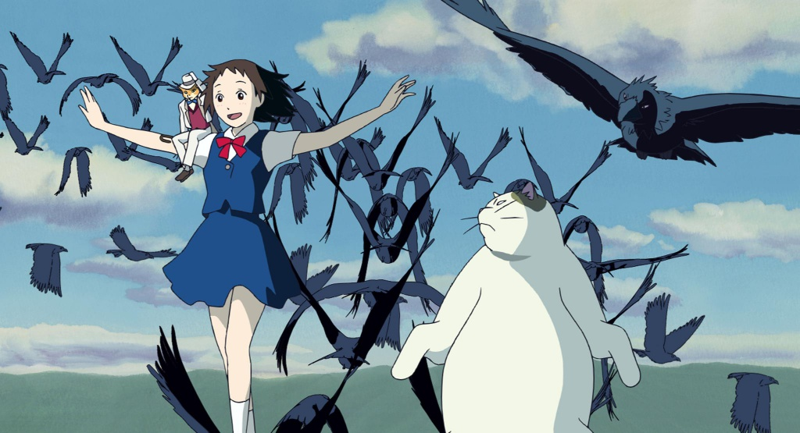

ウトキン・ダニル・ヴァディモビッチ
フレディ・マーキュリー

これが現実の生活ですか？これは単なるファンタジーですか？地滑りに巻き込まれた現実からの逃避はできない目を開けて空を見上げて、私はただの貧しい少年だと思う、私は同情する必要はない私は簡単に来て、簡単に行くから少し高い、少し低いとにかく風が吹く、ママ、私にはあまり関係ないただ男を殺した頭に銃を当てる引き金を引いて、今彼は死んでいるママ、人生はまだ始まったばかりだけど今、私はそれをすべて捨ててしまったママ、Ooo Didn 「あなたを泣かせるつもりはない明日もまた戻ってこないなら続けて、本当に何も関係ないように遅すぎて、私の時間が来た背筋を震わせて体が痛むいつもさようならみんな-私」行かなければならないので、あなたをすべて残して真実に直面しますママ、OOO-（とにかく風が吹く）私は死にたくない私は時々私はまったく生まれたくないだろう私は男の小さなシルエットを見るスカラモウチ、スカラマウチはファンダンゴサンダーボルトと稲妻をします-非常に非常に恐ろしいですガリレオ、ガリレオ、ガリレオ、ガリレオ、ガリレオフィガロ-マグニフィコ貧しい少年で誰も私を愛していない彼は貧しい家族の貧しい少年です彼をこの怪物から救ってください簡単に来てください-あなたは私をビスミーラに行かせてくれます！いいえ-私たちはあなたを行かせません-彼をビスミラに行かせます！私たちはあなたを行かせません-彼をビスミーラに行かせてください！私たちはあなたを行かせません-私を行かせませんあなたを行かせません-私を行かせません（決して）あなたを行かせません-私を行かせません私を行かせません-oooいいえ、いいえ、いいえ、いいえ、いいえ、いいえ、いいえ-ママ・ミア、ママ・ミア、ママ・ミア、行かせてくれてベルゼブブには私のために悪魔が私のために置いてあるので、あなたは私を石打ちして私の目を吐くことができると思うので、あなたは私を愛して私を死ぬままにできると思う-私にこれをすることはできませんベイビーただ出て行かないといけない-ちょうどここから出て行かないといけないああああ、ああああ何も本当に重要なことは誰も見ることができない何も本当に重要ではない-とにかく本当に風は吹く...
私はあなたの魔法に落ちた、私はあなたの肌を味わった
そしてこれは悲劇的ですが、少なくとも私は終わりを見つけました
私はあなたの狂気を目撃した、あなたは私の罪に光を当てた
そして、この悲しみを分かち合うなら、あなたはどこにいましたか？
私はあなたが以前のように恋をしていないことを知っています
あなたが考えていたように、私は1つではないと思います
だからあなたはただ走る
私はこの悲惨さに立ち往生していることを知っています
あなたが考えていたように、私は十分ではないと思います
それで私は走ります
あなたはあなたの勝利を浴びます
あなたは私のヒューズで爆発した
そして、私が惑星に乗ったなら
会費を支払いますか？
あなたの愛は謎だった
ええ、私の愛はばかです
そして私はあなたにたどり着くために国を旅します
私はあなたが以前のように恋をしていないことを知っています
あなたが考えていたように、私は1つではないと思います
だからあなたはただ走る
私はこの悲惨さに立ち往生していることを知っています
あなたが考えていたように、私は十分ではないと思います
だから私はちょうど実行します
ご存知ですか...
- あなたは私の兄弟ではない、兄弟であることを覚えておいてください。
- あなたが行くのが難しいなら、あなたは大胆です
- 人生で美しく歩く方法を知っている人
- 難しい-不可能という意味ではありません。それはまさにそれを意味します
- 私は一人じゃない、私は一人、一人
- サーカスはライオンやオオカミよりも弱いですが、トラではライオンはオオカミではありません。サーカスはライオンであり、オオカミはトラです。虎は狼よりも弱い
- オオカミが沈黙しているなら、彼を邪魔しないほうがいい